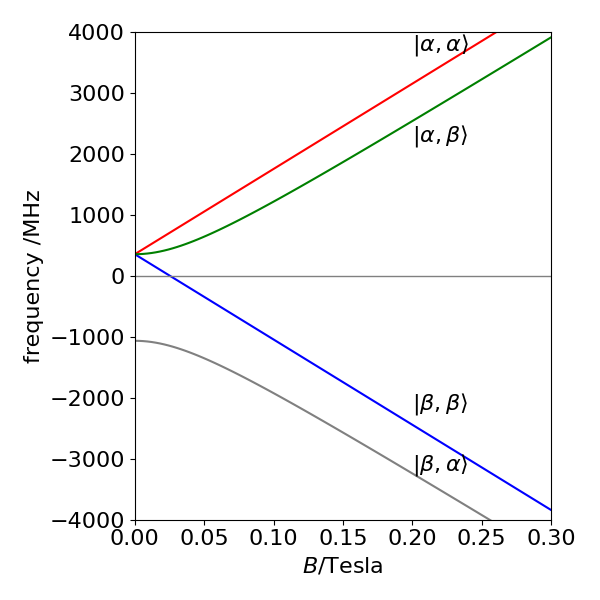
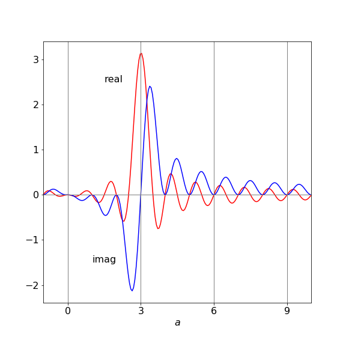
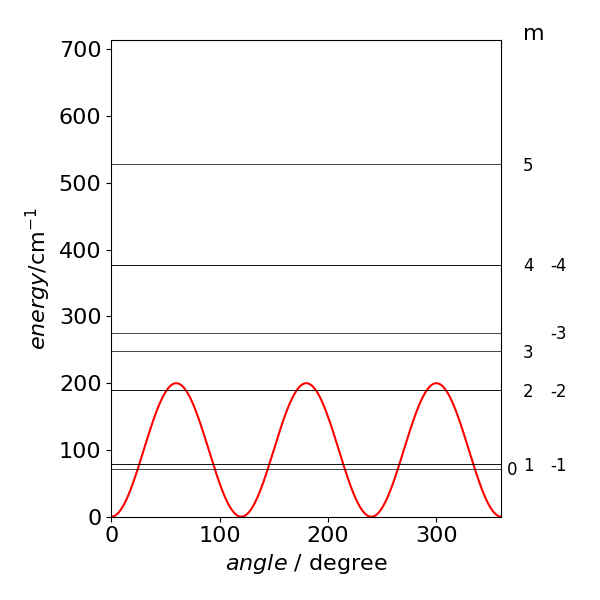

Solutions Q1 - 7
Contents
Solutions Q1 - 7#
# import all python add-ons etc that will be needed later on
%matplotlib inline
import numpy as np
from numpy import linalg as LA
import matplotlib.pyplot as plt
from sympy import *
init_printing() # allows printing of SymPy results in typeset maths format
plt.rcParams.update({'font.size': 16}) # set font size for plots
Q1 answer#
There is no linearly polarized light present so none can cause transitions. If it were present, however, the \(μ\mu_z\) components of the dipole operator would be used and have the selection rules \(\Delta s=0, \Delta m=0\) or \(s_1 =s_2\) and \(m_1 =m_2\). However, all of these terms will be zero because \(m\) must change in any transition to conserve angular momentum. Therefore, all parts of the transition matrix containing \(\mu_z\) are zero. In other words, electric dipole transitions do not couple to spin angular momentum.
The magnetic dipole transitions have the \(\Delta m = \pm 1\) selection rule. To find out what transitions are to be expected start with the ordering of quantum numbers \(m_a, m_b\) in the \(sm\) basis chosen. This ordering is \((m_a, m_b) = (1/2, 1/2), (1/2, -1/2), (-1/2, 1/2), (-1/2, -1/2)\) and transitions are allowed only between states with \(\Delta m = \pm 1\) and these are
which are the four transitions shown in figure 2. In each case only one spin quantum number changes by one unit of angular momentum in each transition.
The effect of the \(x\) and \(y\) components is always zero on the diagonal of the transition matrix because here \(\Delta m = 0\) for both spin quantum numbers \(m_a\) and \(m_b\),
and to conserve angular momentum \(\Delta m = \pm 1\). The off- diagonal terms are not zero if the transition is such that \(m_j = m_i \pm 1\) for either nucleus \(a\) or \(b\). As an example, the 1, 2 element of the basis set with quantum numbers in the first row \(m_{a1} = 1/2, m_{b1} = 1/2\) and in the second column, \(m_{a2} = 1/2 , m_{b2} =-1/2\) ,therefore, \(m_{a1} =m_{a2}\) and \(m_{b2} =m_{b1} -1\).
In calculating the \(T_{+12}\) term with \(\Delta m = 1\) and the operator \(\pmb{\mu}_+\), recall that a spin (angular momentum) operator only acts on wavefunctions with the same subscript, \(a\) or \(b\).
The \(\gamma_a\) term in the middle equation is zero because \(m_{b1} \ne m_{b2}\), and the wavefunctions are orthogonal
The second term is not necessarily zero because \(m_{a1} = m_{a2}\). However, \(m_{b1} = 1/2\), therefore
and this transition is not allowed.
When \(\Delta m = -1\) for one of the pair of nuclei, and the other m values are the same, in this case ma, the operator is \(\pmb{\mu}_-\). The expression for \(T_{-12}\) is similar but not the same as that for \(T_{+12}\)
Repeating similar calculations for other matrix elements generates the complete magnetic transition dipole matrix as
therefore, the strength of the transition is determined by the size of the magnetogyric ratio. As with any type of ‘optical’ transition, the strength of the transition also depends upon the population difference between the two states involved and this is determined by the Boltzmann distribution. The greater the population difference is the greater the signal is, therefore, a lower temperature and/or a bigger energy gap, which is proportional to the magnetogyric ratio and the applied field, produces larger NMR signals.
Exercise: Write some Python/Sympy code to do this calculation.
Q2 answer#
By analogy with equation 22,the Hamiltonian is
where \(S\) refers to the electron and \(I\) to the proton spin. Using a basis set notation as \(|\alpha\alpha\rangle = (1/2, 1/2)(1/2, 1/2), |\alpha\beta\rangle = (1/2, 1/2)(1/2, -1/2)\), and so forth, which is in the same ordering as in the text, if the first letter refers to electron spin and the second to nuclear spin, the Hamiltonian matrix can be written down as
with the abbreviations \(G = g\beta B, G_N = g_N\beta_NB\). (Do not confuse \(\beta\) in the equation for \(G\) with \(\beta\) used in the basis set). The matrix shows how the states \(| \alpha\beta \rangle\) and \(| \beta\alpha \rangle\) are mixed by the electron and nuclear spin interaction because these are the only states with off-diagonal terms. The matrix can be diagonalized by blocking it into two \(1 \times 1\) matrices and a \(2 \times 2\) matrix, therefore two of the energies can be read directly from the matrix. The states that mix have different energies at zero \(B\) and move apart as they all do as \(B\) is increased.
Calculating the eigenvalues can be done using Python/Sympy, although the \(2 \times 2\) matrix can be diagonalized by hand. The result is
The energy levels vs B are shown in Figure 6. The separation of levels at zero field is \(a\), as may be confirmed from the energy levels; the lowest level is at \(-3a/4\) and the other three at \(a/4\). By inspecting the eigenvalues with basis-set ordering, the composition of the levels can be determined. At high field, the states with the same electron spin ms quantum number \(1/2\), which are the two lower and two upper states, are separated by a constant amount a/2, irrespective of the magnetic field B. Also at high field, (Fig. 6) the states can be labelled with the basis set values because mixing between states is small; the off-diagonal terms are small because \(B\) is large. At small or zero \(B\), the states \(|\alpha\beta\rangle\) and \(|\beta\alpha\rangle\) are mixed and it is better to describe them as a symmetric and symmetric pair, \((|\alpha\beta\rangle\pm|\beta\alpha\rangle)\sqrt{2}\).
The three levels at zero field form a triplet
with energy \(a/4\), and the other state is a singlet,
with energy \(-3a/4\). This latter case has total nuclear and electron spin \(F = I + S\) of zero, the former a total of \(1\) with components in a Clebsch-Gordon series of
or of \(1,0,-1\).

Figure 6. The Zeeman effect on the hyperfine structure ground state of hydrogen atoms, (1s \(^2\mathrm{S_{1/2}}\) state) vs field strength \(B\) in Tesla.
Q3 answer#
Because the nuclei interact pair-wise the Hamiltonian has the form
If the basis set is constructed in terms of \(\alpha\) and \(\beta\) for simplicity rather than \(1/2, -1/2\), then the ordering below gives a block diagonal matrix.
The matrix elements are constructed using equations 19 \(\to\) 21. The matrix has the form shown below where the symbol QJ means a sum of terms in chemical shift and J means terms in spin-spin (\(J\)) coupling alone. Each of the \(QJ\) and most of the \(J\) terms are different from one another. The blocking into smaller matrices is clear.
The Python/Sympy code is modified from that in the text is shown below. The result is large so is not included, remove # before \(H\) in the last line to see it when doing the calculation.
i,k,ma,mb,n,Ix,Iy,Iz,qa,qb,qc,hbar,Jab,Jbc,Jac\
= symbols('i,k,ma,mb,n,Ix,Iy,Iz,qa,qb,qc,hbar,Jab,Jbc,Jac')
#------------------------------
def Iz(sa, ma, sb, mb):
if ma == mb: return hbar*ma # <sm|Iz|sm>
else: return 0
#------------------------------
def Iy(sa, ma, sb, mb): # -i<sm|Iy|sm +1/-1 >
if mb == ma+1: return ( 1j*hbar/2)*sqrt(sa*(sa+1)-ma*(ma+1) )
elif mb == ma-1: return (-1j*hbar/2)*sqrt(sa*(sa+1)-ma*(ma-1) )
else: return 0
#------------------------------
def Ix(sa, ma, sb, mb): # <sm|Ix|sm +1/-1 >
if mb == ma+1: return ( hbar/2)*sqrt(sa*(sa+1)-ma*(ma+1) )
elif mb == ma-1: return ( hbar/2)*sqrt(sa*(sa+1)-ma*(ma-1) )
else: return 0
#-------------------------------
def delta(p, q):
if p == q: return 1
else: return 0
#--------------------------------
n = 8
H = zeros(n,n) # matrix of zeros
ma = Matrix([1/2,1/2,-1/2,1/2,-1/2,1/2,-1/2,-1/2])
mb = Matrix([1/2,-1/2,1/2,1/2,-1/2,-1/2,1/2,-1/2])
mc = Matrix([1/2,1/2,1/2,-1/2,1/2,-1/2,-1/2,-1/2])
for i in range(n):
for k in range(n):
m1 = ma[i]
m11= ma[k]
m2 = mb[i]
m22= mb[k]
m3 = mc[i]
m33= mc[k]
Iaz=-qa*hbar*Iz(1/2,m1,1/2,m11)*delta(m2,m22)*delta(m3,m33)
Ibz=-qb*hbar*Iz(1/2,m2,1/2,m22)*delta(m1,m11)*delta(m3,m33)
Icz=-qc*hbar*Iz(1/2,m3,1/2,m33)*delta(m1,m11)*delta(m2,m22)
Iabxyz=(Jab/hbar**2)*( Ix(1/2,m1,1/2,m11)*Ix(1/2,m2,1/2,m22)\
+Iy(1/2,m1,1/2,m11)*Iy(1/2,m2,1/2,m22)\
+Iz(1/2,m1,1/2,m11)*Iz(1/2,m2,1/2,m22) )*delta(m3,m33)
Iacxyz=(Jac/hbar**2)*(Ix(1/2,m1,1/2,m11)*Ix(1/2,m3,1/2,m33)\
+Iy(1/2,m1,1/2,m11)*Iy(1/2,m3,1/2,m33)\
+Iz(1/2,m1,1/2,m11)*Iz(1/2,m3,1/2,m33) )*delta(m2,m22)
Ibcxyz=(Jbc/hbar**2)*(Ix(1/2,m2,1/2,m22)*Ix(1/2,m3,1/2,m33)\
+Iy(1/2,m2,1/2,m22)*Iy(1/2,m3,1/2,m33)\
+Iz(1/2,m2,1/2,m22)*Iz(1/2,m3,1/2,m33) )*delta(m1,m11)
H[i,k]=Iaz+Ibz+Icz+Iabxyz+Iacxyz+Ibcxyz
pass
pass
H
Q4 answer#
(a) Differentiating \(\varphi\) twice and forming the Schroedinger equation gives after some simplification
therefore the energy is \(\displaystyle E_m=\frac{\hbar^2}{2I}m^2\).
Starting with \(H^0\varphi_m=E_m\varphi_m\) the expectation value of operator \(H^0\) between levels with quantum numbers \(m = m'\), which is the diagonal or self-energy, is
when the wavefunction is normalized,\(\int\varphi^*_m\varphi_md\theta = 1\) with \(\theta = 0 \to 2\pi\).
Using the definition of \(\varphi\) in the question the expectation value for the changed potential \(V\) between levels \(m\) and \(m'\) is
The cosine integral may surprise us at first since it appears to be imaginary whereas the matrix element has to be real because it represents energy.
# let m-m'=a
a, theta = symbols('a, theta',real=True)
ans = integrate( exp(1j*a*theta)*cos(3*theta),(theta,0,2*pi), conds='none')
simplify(ans)
Simplifying the result gives \(\displaystyle \frac{ia(1-e^{2i\pi a})}{a^2-3^2}\) which is zero when \(a=m-m'=0\) but real when \(a=3\) or \(m-m'=3\) this is not so obvious because the real part when \(a = 3\) has a numerator and denominator that are both zero; however, the limit is \(\pi\); The real part is \(\displaystyle \frac{a\sin(2\pi a)}{a^2-3^2}\) Plotting the function clarifies this.

Figure 7 Real and imaginary part of the integration. Only integer values of \(a\) are valid are valid because the quantum numbers are integers. Only at integer \(a = 3\) is the real result not zero.
The result for the \(m, m'\) expectation value is
where \(m'\) can only take values \(m\) and \(m \pm 3\). Now all the matrix elements are calculated they can be put into a matrix, equation 12, provided the ordering of the m values is decided upon. The basis set can be ordered in groups of m values as,
which pairs \(m\) values; it could also be done as \(m = \cdots -3, -2, -1, 0, 1, 2, \cdots\) or in a random order; there are many choices. The diagonal terms all contain \(H^0\) and some also contain part of \(H^1\) and are \(\displaystyle {\hbar^2}{2I}m^2+\frac{V_3}{2}\) because on the diagonal \(m = m'\). The off-diagonal terms are only non-zero when \(m' = m \pm 3\) and each have the value \(-V_3/4\). The matrix for \(m\) up to \(\pm 3\) is with substitutions \(V \equiv V_3/2\) and \(\displaystyle A\equiv \frac{\hbar^2}{2I}\)
The same calculation can easily be put into Python/Sympy and its size increased to make the answer more accurate. The expectation values are defined first with \(m\) and \(m1\) as the two quantum numbers and the abbreviation \(A = \hbar^2/2I\) is used for simplicity. The eigenvalues need to be sorted because the order in which the computation returns them will not necessarily be in order of increasing energy. As a check, when the applied potential is zero, the normal rigid rotor energies are returned.
# Hindered Rigin Rotor Algorithm
#--------------------------------
def Hnm(m, m1):
if m == m1 :
return A*m**2 + V3/2
elif (m1 == m + 3) or (m1 == m - 3):
return -V3/4
else:
return 0.0
#---------------------------------
A = 17.0
V3= 200.0
n = 20 # matrix size 2*n+1
H = np.zeros((2*n + 1, 2*n + 1),dtype=float) # matrix initiall zero
Bset = np.zeros(2*n+1,dtype=int) # basis set
Bset[0] = 0
k = 1
for i in range(1,2*n+1,2): # make basis set
Bset[i] = k
Bset[i+1] = -k
k = k + 1
for i in range(2*n+1): # fill matrix
for k in range(2*n+1):
m = Bset[i]
m1= Bset[k]
H[i,k] = Hnm(m,m1)
pass
pass
vals,vecs = LA.eigh(H)
for i in range(13):
print('{:4d} {:12.7g}'.format(Bset[i],vals[i]) )
0 71.79714
1 78.56406
-1 78.56406
2 189.434
-2 189.434
3 247.5931
-3 275.7001
4 377.5059
-4 377.5059
5 528.2649
-5 528.2649
6 714.1384
-6 714.2342
Notice that the degeneracy of the initial levels is broken only in the \(\pm 3\) levels all other levels are doubly degenerate except \(m = 0\). There are five levels below the barrier when \(V_3 =200 \,\mathrm{cm^{-1}}\) and \(A=17 \,\mathrm{cm^{-1}}\).

Q5 answer#
The recommended values in the question do produce quite a good fit to the data; the lowest transition is about 1 wavenumber out as is the second but the third and fourth by \(2-3\) wavenumbers. Still a small error , less that 1%. The calculation is very sensitive the the value of \(A\) and it seems that a better fit will be hard to obtain, primarily because the assumed potential is not exactly correct. Other sinusoidal functions could be tried but would then have to be justified by some physical explanation as to why they are used. With some arbitrary function, with many parameters a better fit could certainly be found, but this would have no physical meaning and would not explain the spectrum.
Q6 answer#
The free rotor and \(3\theta\) terms are given in the previous question and are
To calculate the others,
Substituting \(a=m-m'\) simplifies the integral which is \(\displaystyle \frac{ia(1-e^{2\pi ia})}{a^2-1} \) and is calculated in the same way to the similar integral in question 4. This integral has the limit \(\pi\) when \(m'=m\pm 1\). The expectation value for \(V_1\) is \(\displaystyle H^1_{mm'}=\frac{V_1}{2}\delta_{mm'}-\frac{V_1}{4}\delta_{mm\pm 1}\) and for the \(6\theta\) potential is \(\frac{V_6}{2}\delta_{mm'}-\frac{V_6}{4}\delta_{mm\pm 6}\).
There are therefore four terms on the diagonal; the free rotor and one from each of the potentials. We expect off- diagonal terms when \(m' = m \pm 1, m' = m \pm 3\) and \(m' = m\pm 6\). The basis set is still that of the free rotor in \(m = 0, 1, -1, 2, -2 \cdots\) with \(V_{136} =V_1 +V_3 +V_6\), and the matrix must be Hermitian: real and symmetrical. The entries are added according to the changes in \(m\). For clarity the notation is similar to that in question 3; but with \(V\equiv V_{136}/2\)
With three parameters \(V_1, V_3\) and \(V_6\) as variables, it should be possible to fit the most complicated restricted rotor spectra.
Q7 answer#
The radial parts of the wavefunction can be ignored because \(r\) factors out of the equation and will integrate to a constant.
Changing to spherical polar coordinates, the potential becomes
The Hamilton matrix has nine elements of the form \(\langle Y_{1j} | V |Y_{1k}\rangle\) where \(j, k = 0, 1, -1\). In spherical polar coordinates
To calculate element \(\langle Y_{11} | V |Y_{11}\rangle\), the wavefunction \(Y_{11} =-n\sin(\theta)e^{+i\varphi}\) is used and the integral is
The integral in \(\varphi\) is evaluated first and results in
where \(\gamma\) combines the result of the integration and constants. The other diagonal element \(\langle Y_{1-1} | V |Y_{1-1}\rangle\) produces the same result.
The off diagonal term \(\langle Y_{1-1} | V |Y_{11}\rangle\) has a term in \(e^{2i\varphi}\) in the \(\varphi\) integral and the result of this is to produce
The diagonal term \( \langle Y_{10} | V |Y_{10}\rangle \) produces
which evaluates to \( \langle Y_{10} | V |Y_{10}\rangle =-2\gamma(A+B)\).
The remaining (off-diagonal) matrix elements are between terms with \(m\) values \((0 1), (0 -1\)). These integrals are zero because there is a product of sine and cosine making the product in the integral an odd function in \(\cos(\theta)\) over the range \(0 \to \pi\).
If the basis set is in the order of quantum number \(m = 0, 1, -1\) the matrix of expectation values is
One eigenvalue is \(\lambda = -2\gamma (A + B)\) and the other two obtained from \((\gamma(A+B)-\lambda)^2 -\gamma^2(-A+B)2 =0\), which produces \(\lambda = 2\gamma A, \lambda = 2\gamma B\). The effect of the field is seen to raise the two \(Y_{1\pm1}\) orbitals and to lower \(Y_{10}\).
A calculation using Python/Sympy is shown below. It may be necessary to integrate the functions in \(\theta\) first, without using the complex exponential part at all, then add this in in the second integration.
n, theta, phi, A, B, V, X = symbols('n, theta, phi, A, B, V, X',real = True, positive = True )
n = sqrt(3/(8*pi)) # normalisation for sph harmonics
Y1p1= lambda theta,phi: -n*sin(theta)*exp( 1j*phi) # Y(1,+1)
Y1m1= lambda theta,phi: n*sin(theta)*exp(-1j*phi) # Y(1,-1)
Y10 = lambda theta,phi: n*sqrt(2)*cos(theta) # Y(1,0)
V = lambda theta,phi: (A*cos(phi)**2 + B*sin(phi)**2)*sin(theta)**2 - (A+B)*cos(theta)**2
# <Y10|V|Y10>
X = integrate( Y10(theta,-phi) *V(theta,phi) * Y10(theta,phi)*sin(theta),(theta,0,pi) )
ans10 = integrate( X ,(phi,0,2*pi) )
simplify(ans10)
The other integrals may be calculated similarly.
(b) The px, py, pz orbitals point along the \(x\)-, \(y\)-, and \(z\)-axes. As the potential has no terms in \(xy, xz\) or \(yz\) the field it produces is only along the axes. The matrix will therefore be diagonal. The matrix elements are calculated in the same manner as in (a) the eigenvalues can be read from the matrix, because it is diagonal.
Exercise: Calculate the splitting the field \(V\) produces in the five d orbitals.